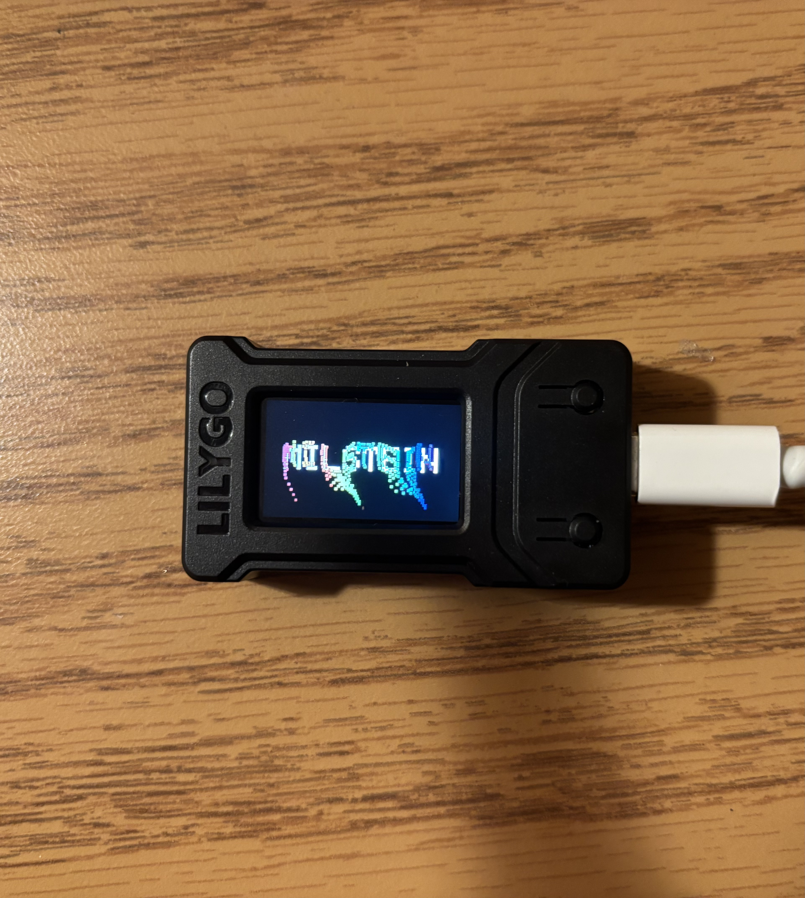
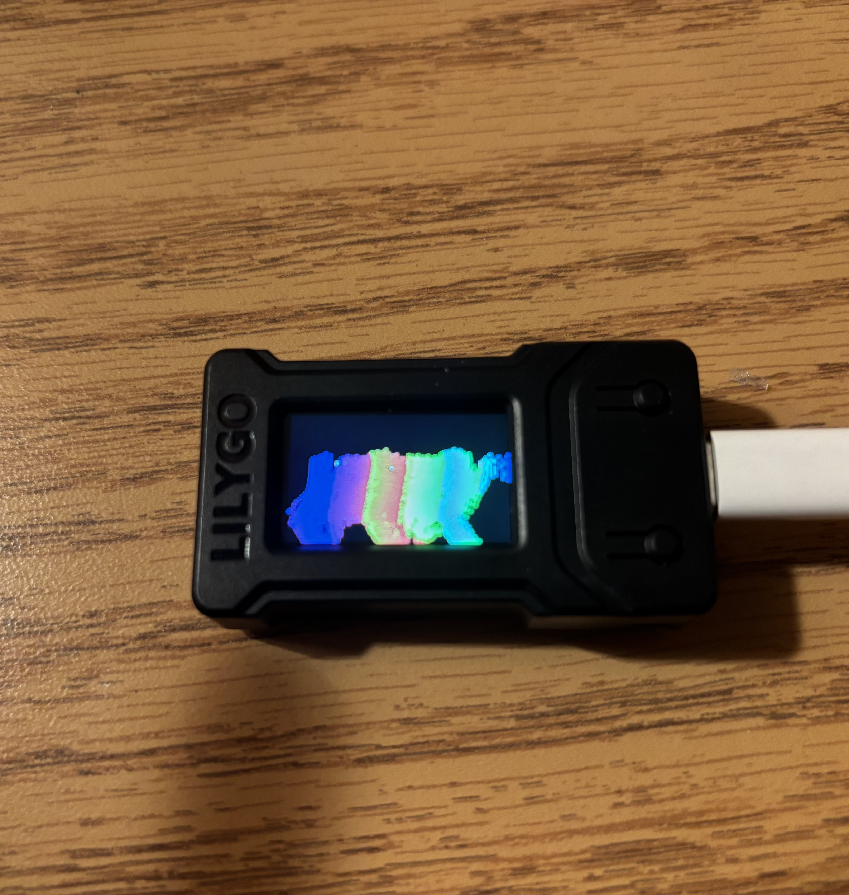

Generative Text on ESP32 TTGO T-Display
A short generative art piece running on an ESP32 TTGO T-Display. The device displays the text “MILSTEIN” and uses smooth, noise-driven displacement and slow color cycling to create a calming, breathing visual suitable for a hallway installation.
This page documents the artistic vision for the piece, how it was tailored to the fifth-floor Milstein hallway, and the technical details needed for other artists to reproduce or extend the work.
Generative System
The sketch renders the text “MILSTEIN” to the display and then treats it as a mask for a grid of colored blocks. For each sampled point inside the text, the program computes a smooth, time-varying displacement using a cheap trig-based noise function, so the letters slowly breathe, dissolve, and re-form.
Color is chosen from a continuous HSV sweep, which produces a slow hue cycle across the text. Because all of this is computed on-device each frame instead of playing back a pre-rendered animation, the display never exactly repeats, even over the duration of a class period.
For performance and legibility, the code samples the text on a downscaled grid (for example, every 3 pixels) and draws small rectangles instead of individual pixels. This keeps the motion smooth on the TTGO while also giving the letters a slightly blocky, mosaic-like texture that works well at arm’s length.
Installation in Milstein
During class, the ESP32 ran from a battery and was hung in a small paper envelope in the fifth floor Milstein hallway near the elevators. The envelope framed the tiny screen and hid most of the wiring so that the glowing text felt like a small window rather than a piece of lab equipment.
To keep the piece gentle and sustainable in that shared space, I kept the brightness low, the motion slow, and the text short and readable from arm’s length. The continuous, non-repeating behavior meant that each glance at the installation revealed a slightly different moment, while still clearly saying “MILSTEIN.”
Video Documentation
A short 20 to 40 second handheld phone video is enough to show the breathing motion of the text and how the envelope frames the display. You can also export or embed a GIF version of the sketch for quick preview in documentation.
Code & README
The full ESP32 sketch and documentation live in the following GitHub repository:
- Repository: https://github.com/jessicasunxx/esp32-platformio
The README in that repository describes how to flash the code onto a TTGO T-Display, what libraries you need, and any configuration details (like pin definitions, battery setup, and display initialization) so that another artist could reproduce the installation. In particular, it documents the key files:
src/main.cppis the generative sketch-
platformio.iniis the PlatformIO configuration referencing the TTGO setup forTFT_eSPI -
README.mdis the README with build and upload instructions and notes on customizing the text and parameters
A typical reproducible workflow is:
- Clone the repository to your machine.
-
Open the folder in VS Code with the PlatformIO extension, or
install PlatformIO Core via
pip. -
Connect a TTGO T-Display via USB and select the correct serial
port (for example,
/dev/cu.usbserial-XXXXXon macOS). -
Build and upload via PlatformIO’s tasks or with the CLI commands:
pio runandpio run -t upload. - For battery operation, reduce brightness using the backlight pin and slow the frame rate if you need longer runtime.
The documentation also notes common technical issues, like
backlight control (TTGO variants wire the TFT_BL pin
differently), serial port selection on macOS, and why the sketch
samples a downscaled grid and draws blocks instead of manipulating
every pixel for performance.
Photos & Installation Views
These still images document different moments in the animation, from dense color fields to more legible text, all running on the LILYGO TTGO T-Display.


Reflection
I prioritized legibility and battery life over heavy visual complexity because the devices needed to run unattended for a class period while hanging in a public hallway. Instead of debugging toward a single correct output, I was tuning a space of possible behaviors so that the piece would feel alive but not chaotic when people walked past it.
Working within the constraints of the small screen, limited color palette, and battery life made me more intentional about each visual decision. It also made me notice practical details like update speed, brightness, and text size that quietly shape how readable and inviting the piece feels in public.
The generative technique (on-device displacement plus hue cycling) also scales well across many devices: each board will compute slightly different frames depending on its internal clock, creating a subtly non-uniform installation while still sharing a clear visual language.
Looking ahead, I could imagine extending this work with a small web or BLE-based interface to edit the displayed text remotely, swapping the trig-based noise for a richer Perlin or Simplex implementation, or adding low-power sleep scheduling so that the piece adapts to the building’s daily rhythm.